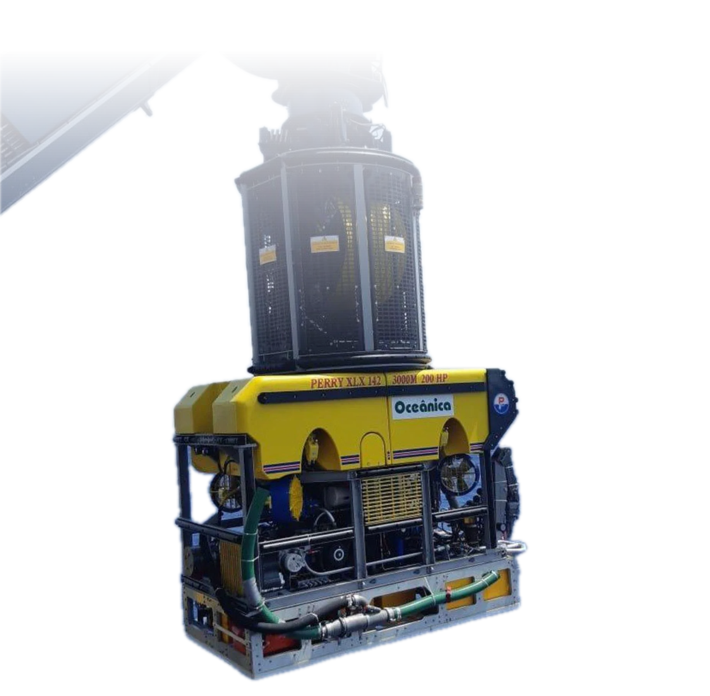
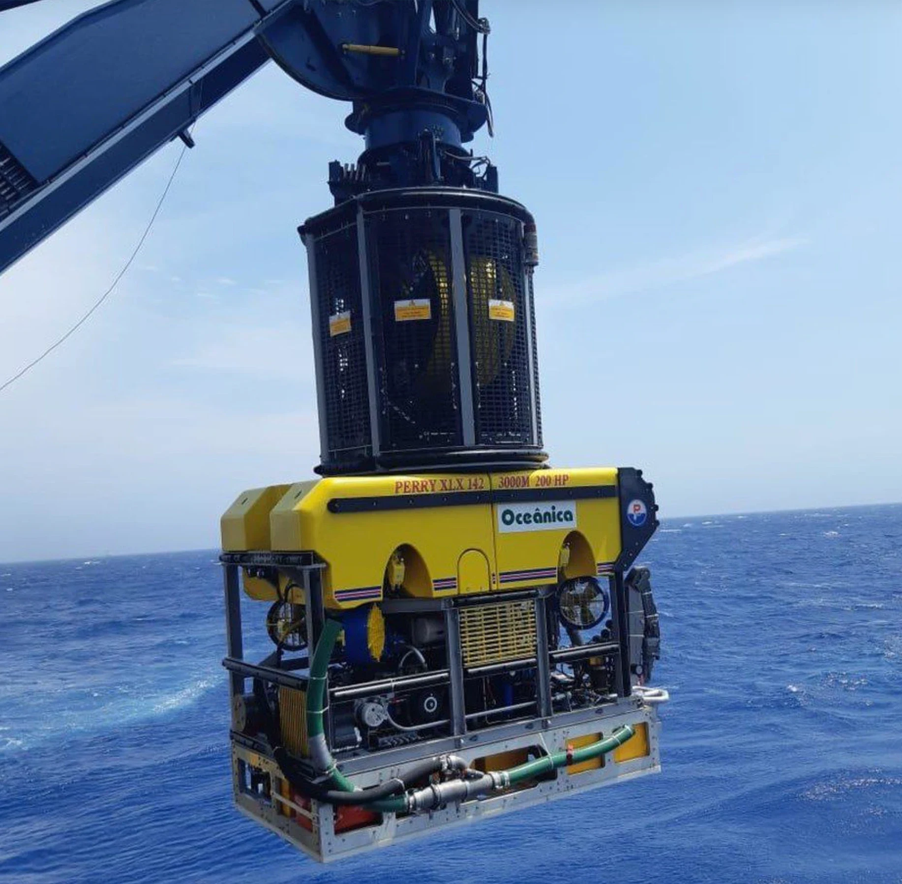

01 · Lançamento
ROV Work Class · Sistema de gerenciamento do umbilical
02 · Descida
Abaixo de 300 metros,
o trabalho é das máquinas.
03 · Três mil metros
Profundidade de operação das embarcações com ROV Work Class

04 · O veículo
Veículos Work Class de 150 a 250 HP, com manipuladores de sete funções. O piloto trabalha do convés.
Marcações no veículo: PERRY XLX 142 · 3000M · 200 HP
01 · Lançamento
0000 m · Profundidade